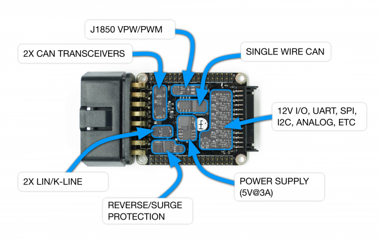
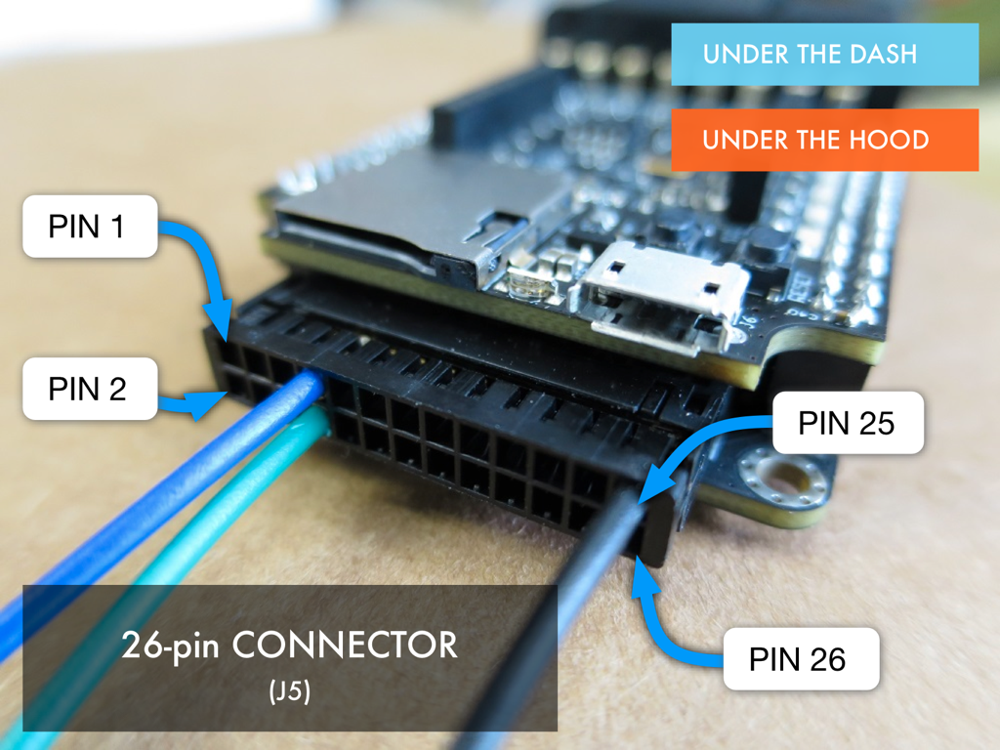

Automotive Interfaces
The lower board of M2 contains both the power supply circuitry and the automotive interfaces required to communicate with your car. This includes:
- 2x CAN bus
- 1x SWCAN (single wire can)
- 2x LIN/9141
- J1805 VPW/PWM

In addition, every M2 has a 26 pin "expansion" connector that provides even more connection options. For example: UART, SPI, I2C, general purpose 12V drivers and 12V analog inputs. See the schematic for actual pinout details:
https://github.com/macchina/m2-hardware
Refer to the following diagram for pin 1 location.

CAN
CAN bus is a vehicle bus standard used in most cars built after 2006. It is a message-based protocol that allows modules within a car to communicate with one another. While the physical layer is understood and open, the actual meaning of the messages sent over the bus are not. While some messages are legislated to be "standard", the majority of CAN messages in your typical car are not well documented.
M2 has 2 CAN channels (In addition to a Single-wire CAN channel) that can interface directly to the CAN bus network of your car. M2 uses the 2 built-in CAN controllers found in the SAM3X and 2 external TJA1051 transceivers.
Here is the link to the datasheet: http://www.nxp.com/docs/en/data-sheet/TJA1051.pdf
CAN bus connections can be found on either the 16 pin OBD2 connector on the UTD M2 or the 24 pin connector used on the UTH M2.
Arduino libraries are well developed and available here:
https://github.com/collin80/due_can
[TO DO: Discuss termination and how to terminate with solder jumpers on interface board.]
[TO DO: Add schematic page for CAN bus transceivers]
Single-wire CAN
Here is where we talk about all the SW can libraries.
LIN
LIN bus is an inexpensive, single wire, serial network protocol used in many modern cars. Typically, LIN would be used to control and monitor lower-priority devices such as seat positions, door locks, radio and illumination.
M2 has 2 LIN channels that can interface directly to the LIN bus network of your car. M2 uses 2 external TJA1021 transceivers connected via UART to the processor.
Here is the link to the datasheet: http://www.nxp.com/docs/en/data-sheet/TJA1021.pdf
Note that the TJA1021 transceiver is used for both LIN and ISO9141 (K-LINE/L-LINE) for a a total of 2 channels.
LIN bus connections can be found on either the 16 pin OBD2 connector on the UTD M2 or the 24 pin connector used on the UTH M2.
Arduino libraries are available here: https://github.com/macchina/LIN
K-line
ISO9141 (K-Line) interface uses the TJA1021. While this part is designed for LIN, it is also K-line compatible.
Here is the link to the datasheet: http://www.nxp.com/docs/en/data-sheet/TJA1021.pdf
J1850
Here we will describe more about how the J1850 circuitry works. To begin with, to change between the levels required for PWM and VPW variants of J1850, use this signal:
J1850_PWM_nVPW
This signal is connected to Pin 123 (PB8) of the SAM3X.
Make this pin HIGH for PWM and LOW for VPW
This is an example of some code that will both turn on power to J1850 circuit AND set level for either PWM or VPW:
void setup() {
pinMode(PS_J1850_9141, OUTPUT);
pinMode(PWM_nVPW, OUTPUT);
digitalWrite(PS_J1850_9141, HIGH); // LOW = no power at +12V_SW/+5V_SW
// HIGH = power at +12V_SW/+5V_SW
digitalWrite(PWM_nVPW, HIGH); // LOW = ~7.9v (VPW)
// HIGH = ~5.9V (PWM)
}
void loop() {
}